▲ 대흥사 입구 문루. 2011년 10월 4일 촬영한 사진이라 올해 모습과 다를 수 있다. 사진=Steve46814(위키미디어 커먼스, CC BY-SA 3.0)
"케이블카 타고 가련봉도 갈 수 있나요?" 두륜산케이블카 누리집의 자주하는 질문에 실제로 올라와 있는 물음이다. 답은 "아니요"다. 케이블카가 닿는 곳은 고계봉(638m)이고, 가련봉(703m)은 내려온 뒤 대흥사에서 정규 등산로로 따로 올라야 한다. 이 글은 2026년 10월 13일(화)에 케이블카 운영사 누리집, 두륜산도립공원 누리집, 해남군 누리집, 한국관광공사 TourAPI를 직접 열어 확인한 값만 정리했다. 케이블카는 왕복 대인 15,000원·소인 12,000원, 산림청이 9월에 낸 올해 단풍 예측지도의 두륜산 절정(단풍 50%) 예상일은 11월 11일이다. 올해 가을 통제 공지와 케이블카 정기 점검·휴무일은 공식 자료에서 찾지 못해 "확인하지 못했다"고 적었다.
💡 먼저 결론
케이블카는 하절기 09:00~18:00, 동절기 09:00~17:00이고 전화 예약은 안 되며 당일 현장에서 탑승 시간을 받는다(운영사). 대흥사 입장료는 무료, 주차료는 공원 누리집(2021년 1월 기준 표기)에 승용차 3,000원이다. 올해 확인된 공식 통제는 7월 8일 집중호우 예보에 따른 오소재 등산로·대흥사 매표소 옆 산책로·표충사 등산로 통제(7월 9일 08:00 해제)뿐이고, 현재 진행 중인 통제 공지는 공원 누리집 공지사항에 없었다. 두륜산케이블카 누리집 바로가기
1. 한눈에 보기 — 확인한 것과 확인하지 못한 것
두륜산은 해남군 삼산면에 있는 도립공원(1979년 12월 지정)으로, 가련봉·두륜봉·고계봉·노승봉 등 8개 봉우리가 연꽃 모양 능선을 이룬다(두륜산도립공원 누리집). 천년고찰 대흥사가 이 산 안에 있고, 2018년 '산사, 한국의 산지승원'의 하나로 유네스코 세계유산에 올랐다. 방문 전에 필요한 값을 한 표에 묶었다.
| 항목 | 확인된 값 | 출처·상태 |
|---|---|---|
| 케이블카 요금(왕복) | 대인(중학생 이상) 15,000원 / 소인(36개월~초등학생) 12,000원 / 36개월 이하 무임 | 운영사 누리집 |
| 케이블카 운행 | 하절기 09:00~18:00, 동절기 09:00~17:00. 첫 화면은 이날 '운행중, 09:00~18:00' 표기 | 운영사 누리집. 동절기 전환일은 확인하지 못함 |
| 케이블카 점검·휴무 | 정기 점검일·휴무일 공지 확인하지 못함. 강풍·천둥·번개·지진 땐 전면 중단 | 운영사 FAQ·TourAPI('홈페이지 참조') |
| 대흥사 입장료·개방 | 입장료 무료, 연중무휴, 신용카드 가능 | TourAPI(수정 2026-10-02), 공원 누리집 |
| 주차료 | 승용·승합 3,000원, 경차 2,000원, 버스 5,000원(2021년 1월 1일 기준 표기). 케이블카 주차장은 무료(TourAPI) | 공원 누리집. 올해 요금표 갱신 여부 확인 못 함 |
| 단풍 절정(예측) | 두륜산 11월 11일(수), 산림청 단풍나무류 절정=단풍 50% | 산림청 2026 예측지도 이미지 |
| 올해 통제 공지 | 7월 8일 18:00 집중호우 통제 → 7월 9일 08:00 해제. 현재 통제 공지 없음 | 공원 누리집 공지사항(3건) |
| 문의 | 공원 061-530-5957, 케이블카 061-534-8992, 템플스테이 061-535-5775 | 각 누리집·TourAPI |
▲ 대흥사 입구 문루. 2011년 10월 4일 촬영한 사진이라 올해 모습과 다를 수 있다. 사진=Steve46814(위키미디어 커먼스, CC BY-SA 3.0)
2. 두륜산케이블카 — 왕복 15,000원, 내리는 곳은 고계봉
두륜산케이블카는 2010년 8월 13일 문을 열었고(TourAPI), 하부역사 주소는 해남군 삼산면 대흥사길 88-45다. 운영사 누리집은 선로 1.6km를 초속 3.6m로 편도 8분에 오른다고 안내한다(TourAPI는 초속 3.8m로 적어 두 값이 다르다). 한 대에 최대 50명이 타고, 평상시 10~20분 간격이며 탑승객이 많으면 10분 간격이다. 편도 표는 없다. 운영사는 "도립공원 보호에 의한 등산로 폐쇄로 걸어서 등반은 금지"라고 안내하고, 하부역사에서 편도를 이용할 수 없다고 적는다.
| 구분 | 운영사 누리집 | TourAPI(수정 2026-06-30) |
|---|---|---|
| 대인(중학생 이상) | 15,000원 | 15,000원 |
| 소인 | 12,000원(36개월~초등학생) | 12,000원(36개월~초등학생) |
| 단체 | 13,000원 — 대인 20명 이상 | 13,000원 — 대인 30명 이상 |
| 할인(장애인·65세 이상·국가유공자) | 2,000원 할인, 중복 할인 제외 | 1,000원 할인, 중복 할인 제외 |
| 영유아 | 36개월 이하 무임(영유아는 증명 제시 시 35개월까지 무료라는 문구도 병기) | 36개월 이하 무임 |
✅ 단체·할인은 현장에서 한 번 더
기본 요금은 두 곳이 같지만 단체 인원 기준(20명/30명)과 할인액(2,000원/1,000원)은 서로 다르다. 이 글은 운영사 표기를 우선 따르되, 단체나 할인 대상은 매표소(061-534-8992)에 먼저 확인하자. 할인을 받으려면 신분증을 제시해야 한다. 요금 안내 바로가기
| 구성 | 계산 | 합계 |
|---|---|---|
| 성인 2명 + 초등학생 1명 | 15,000×2 + 12,000 | 42,000원 |
| 성인 2명 + 소인 2명 | 15,000×2 + 12,000×2 | 54,000원 |
| 65세 이상 1명(할인 적용) | 15,000 − 2,000 | 13,000원 |
| 대인 20명 단체 | 13,000×20 | 260,000원 |
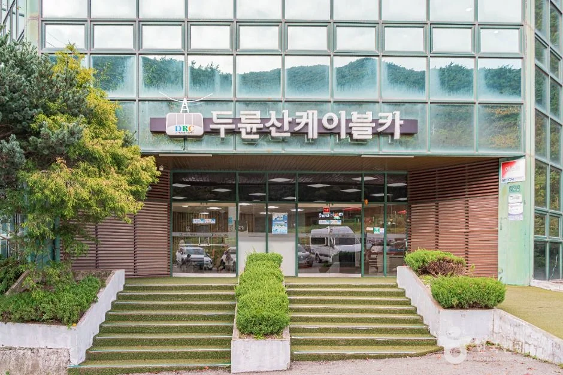
▲ 두륜산케이블카 하부역사 정면(한국관광공사 제공). 촬영 시기는 확인하지 못했다. 사진=한국관광공사
탑승 방법과 이용 제한
운영사 FAQ와 이용안내를 옮기면 다음과 같다. 표에는 탑승 시간이 찍히고, 정해진 시간에만 탈 수 있다. 상부역사에서 보내는 시간은 제한이 없지만 마지막 케이블카는 반드시 타야 한다. 마지막 차를 타고 올라가면 상부역사에서 20분 정도밖에 못 본다고 운영사가 안내한다. 왕복 소요는 1시간 정도다.
| 항목 | 내용 |
|---|---|
| 예약 | 사전 예약 없음. 당일 현장 구매·시간 예매만 가능(전화 예약 불가) |
| 환불 | 탑승 시간이 지난 뒤 환불·시간 변경은 20% 감액. 탑승 후 환불 불가 |
| 탑승 불가 | 임산부, 반려동물(시각장애인 안내견 제외), 술·음식물, 등산용 배낭, 피켈(등산 지팡이) |
| 기상 | 초속 15m 이상 강풍이면 자동 중지, 못 탄 표는 환불. 천둥·번개·지진 땐 전면 중단. 우천·안개는 운행 가능, 폭설은 제설로 지연 |
| 주차 | 하부역사 건물 도착 전 오른쪽, 주차 뒤 언덕길로 2~3분 이동 |
| 도착 지점 | 고계봉. 가련봉은 대흥사에서 정규 등산로 이용 |
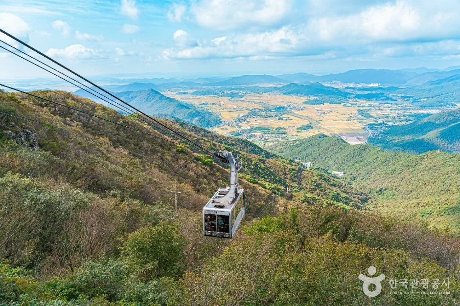
▲ 능선을 오르는 케이블카와 해남 들녘 조망(한국관광공사 제공). 촬영 시기는 확인하지 못했다. 사진=한국관광공사
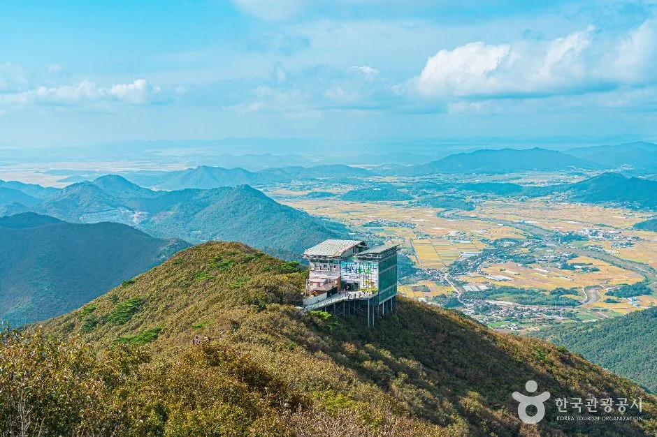
▲ 두륜산 상부역사 일대 조망(한국관광공사 제공). 촬영 시기는 확인하지 못했다. 사진=한국관광공사
TourAPI는 케이블카 소개에서 "울창한 숲이 이루는 가을 단풍과 푸르른 동백나무는 이 산의 자랑거리"라고 적고, 정상에서는 서해안과 남해안의 다도해가 한눈에 보인다고 소개한다. 시계가 흐리거나 바람이 센 날에는 운행이 멈출 수 있으니 출발 전 운영사 누리집 첫 화면의 운행 표시를 확인하자(운영사 FAQ는 이 첫 화면 상단에 매일 새 운행시간을 게시한다고 안내한다).
3. 일몰과 폐장 시각 — 동절기에는 17시, 11월 중순 일몰은 17시 30분 무렵
운영사는 하절기 09:00~18:00, 동절기 09:00~17:00를 안내하지만 어느 날부터 동절기인지는 공지하지 않았다. 10월 13일 첫 화면에는 09:00~18:00가 적혀 있다. 한국천문연구원 해/달 출몰시각 계산식(공개된 JavaScript)을 대흥사 좌표(동경 126.617도, 북위 34.477도)에 넣어 일몰을 구했다. 계산기가 분 미만을 버리므로 실제 표기와 1분 정도 어긋날 수 있다. 두륜산도립공원 소개는 "상시 개방, 일몰 2시간 전 입산 주의"라고 적는다(TourAPI).
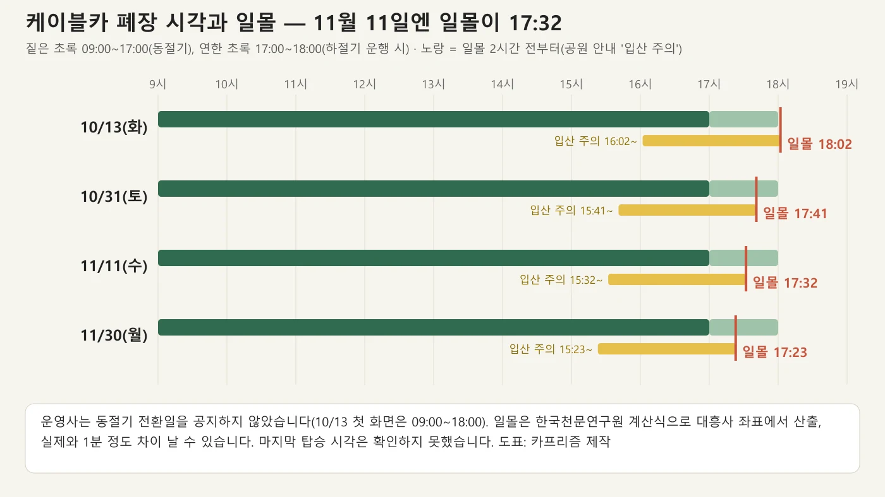
▲ 케이블카 운행 시간과 일몰 계산값 비교. 사진=카프리즘 제작
| 날짜 | 시민박명 시작 | 일출 | 일몰 | 일몰 2시간 전 |
|---|---|---|---|---|
| 10월 13일(화) | 06:11 | 06:37 | 18:02 | 16:02 |
| 10월 20일(화) | 06:17 | 06:42 | 17:53 | 15:53 |
| 10월 31일(토) | 06:26 | 06:52 | 17:41 | 15:41 |
| 11월 5일(목) | 06:30 | 06:57 | 17:37 | 15:37 |
| 11월 11일(수) | 06:36 | 07:02 | 17:32 | 15:32 |
| 11월 15일(일) | 06:39 | 07:06 | 17:29 | 15:29 |
| 11월 30일(월) | 06:53 | 07:20 | 17:23 | 15:23 |
동절기 폐장이 17:00라면 11월 11일 일몰(17:32)보다 먼저 닫는다. 케이블카로 일몰이나 노을을 보는 일정은 어렵고, 마지막 탑승 시각과 정확한 전환일을 확인하지 못했으므로 가을 오후 방문은 매표소에 마지막 탑승 시간을 묻는 편이 안전하다(카프리즘 판단).
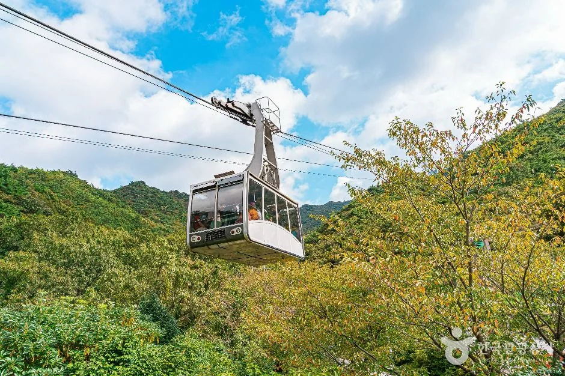
▲ 숲 위를 지나는 케이블카(한국관광공사 제공). 푸른 잎이 보여 단풍철 사진은 아니며 촬영 시기는 확인하지 못했다. 사진=한국관광공사
4. 대흥사 — 입장료 무료, 주차료·템플스테이는 이렇게 확인했다
TourAPI의 대흥사(해남) 소개는 이 절이 "백제 성왕 22년에 아도화상이 창건했다고 전해지고", 임진왜란 때 서산대사가 거느린 승군의 총본영이 있던 곳이며 "초의선사가 일지암을 짓고 40여 년 홀로 수행"해 우리나라 차 문화의 성지가 됐다고 설명한다. 창건 연대는 자료마다 달라(두륜산도립공원 누리집은 『죽미기』 514년설과 『만일암고기』 875년설을 소개하고, 둘 다 의심하는 『대둔사지』 편찬자의 견해도 함께 적는다) 이 글에서는 단정하지 않는다.
| 항목 | 내용 | 출처 |
|---|---|---|
| 입장료 | 무료 | TourAPI detailInfo2(수정 2026-10-02), 공원 누리집 |
| 개방 | 연중무휴. 이용 시간은 'TourAPI: 전화 문의 요망' | TourAPI |
| 주차료 | 경차 2,000원 / 승용·승합 3,000원 / 버스 5,000원. 장애인·국가유공자 등은 면제 | 공원 누리집(2021년 1월 1일 기준 표기) |
| 주차장 구성 | 매표소·대흥사·일주문·상가 주차장, 장애인 주차장, 전기차 충전기 | 공원 누리집 시설안내 |
| 문의 | 종무소 061-534-5502~3, 템플스테이 061-535-5775, 해설 안내 땅끝관광안내소 061-532-3883 | TourAPI |
| 유의 | 대흥사 매표소 입장 때 오토바이·자전거(산악자전거 포함) 이용 불가 | 템플스테이 누리집 오시는 길(작성일 미표기) |
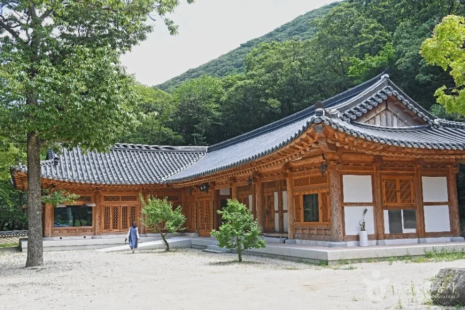
▲ 대흥사 경내 건물(한국관광공사 제공). 촬영 시기는 확인하지 못했다. 사진=한국관광공사
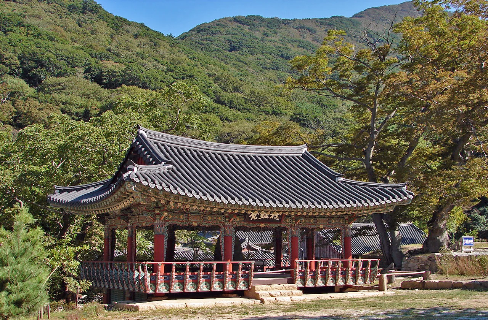
▲ 대흥사 경내의 붉은 난간 누각. 2011년 10월 4일 촬영. 사진=Steve46814(위키미디어 커먼스, CC BY-SA 3.0)
대흥사 템플스테이 — 프로그램은 확인, 참가비는 확인 못 함
템플스테이 누리집(디디고 템플스테이)은 세 가지 프로그램을 안내한다. 1박2일 자율형은 주중 매일 상시 운영하고, 1박2일 주말체험형과 2박3일 특별체험형이 있다. 2박3일 특별체험형은 누리집에 '설, 추석, 여름휴가철 운영'으로 적혀 있어 가을 평일 일정에는 해당하지 않을 수 있다. 접수는 15:00, 저녁공양은 17:00(하절기 17:30), 새벽예불 04:15가 공통이다. 참가비와 올해 예약 가능 일자는 누리집에서 확인하지 못했다. 신청은 누리집의 참가신청 링크(외부 예약 페이지)로 받는다. 템플스테이 프로그램 바로가기
| 프로그램 | 핵심 일정 | 메모 |
|---|---|---|
| 1박2일 자율형 | 둘째 날 08:00 숲길걷기, 09:00 자율정진, 11:30 점심공양 후 회향 | 주중 매일 상시 |
| 1박2일 주말체험형 | 첫날 18:30 스님과 차담, 20:30 소원 담아 하늘 보기 / 둘째 날 08:00 '두륜산을 디디고' | 주말 운영 |
| 2박3일 특별체험형 | 둘째 날 08:00 두륜산 북미륵암 산행(우천 시 요가명상), 15:00 108배 / 셋째 날 08:00 케이블카 탑승 | 설·추석·여름휴가철 운영(누리집 표기). 일정에 케이블카 포함 |
가을 템플스테이 비용과 예약 경쟁은 가을 템플스테이 예약 기사에서 전국 단위로 다뤘다. 대흥사 누리집의 후기 게시판에는 광고성 글이 올라와 있어 후기 내용은 참고하지 않았다.
5. 두륜산 단풍 — 산림청 예측 절정은 11월 11일(수)
산림청이 2026년 9월 22일 발표한 산림단풍 예측지도(단풍나무류)에서 두륜산의 절정 예상일은 2026년 11월 11일이다. 지도 이미지를 직접 열어 확인한 값이며, 같은 지도에서 설악산 10월 20일, 지리산 10월 27일, 내장산 11월 4일, 월출산 11월 9일이다. 카프리즘의 단풍 절정 예측 주말표와 산림청 예측지도 기사도 같은 수치를 쓴다. 오늘(10월 13일)은 예측 절정일보다 29일 앞이다.
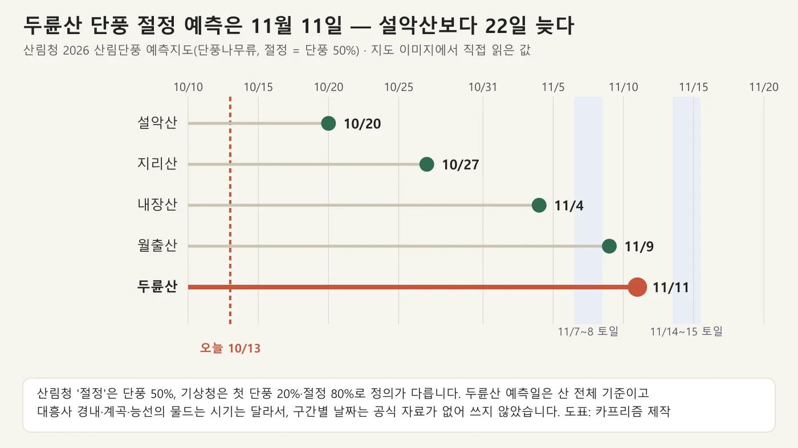
▲ 산림청 2026 예측지도의 산별 단풍나무류 절정 예측일. 사진=카프리즘 제작
📌 '절정'의 정의가 두 가지다
산림청 절정은 단풍이 산 전체의 50%에 든 날, 기상청은 첫 단풍을 20%, 절정을 80%로 정의한다. 산림청 11월 11일은 50% 기준이라, 80% 기준으로 보면 며칠 더 뒤로 밀린다(정의상의 관계이며 구체 일수는 공식 자료가 없다). 두륜산의 평년 절정일은 확인하지 못했고, 카프리즘 기존 기사 단풍 시기 데이터 기사는 두륜산을 전국에서 단풍이 가장 늦게까지 남는 곳으로 소개한다. 올해 두륜산의 단풍 시작·현황을 알리는 공식 공지는 찾지 못했다.
| 날짜 | 예측 절정일과의 차이 | 일몰(계산값) | 메모 |
|---|---|---|---|
| 11월 7일(토) | 4일 앞 | 17:35 | 절정 직전 시기. 단풍 비율은 예측보다 낮을 수 있음 |
| 11월 8일(일) | 3일 앞 | 17:34 | 〃 |
| 11월 11일(수) | 예측일 | 17:32 | 평일이라 혼잡 부담이 적음(카프리즘 판단) |
| 11월 14일(토) | 3일 뒤 | 17:30 | 절정 직후, 기상에 따라 낙엽 진행 |
| 11월 15일(일) | 4일 뒤 | 17:29 | 〃 |
단풍은 같은 산에서도 높은 곳이 먼저 물든다는 일반론이 있으나, 두륜산의 구간별 날짜는 공식 자료가 없어 적지 않는다. 가을 사진은 TourAPI에도 없어 이 글의 사진은 모두 단풍철이 아닌 때의 모습이다.
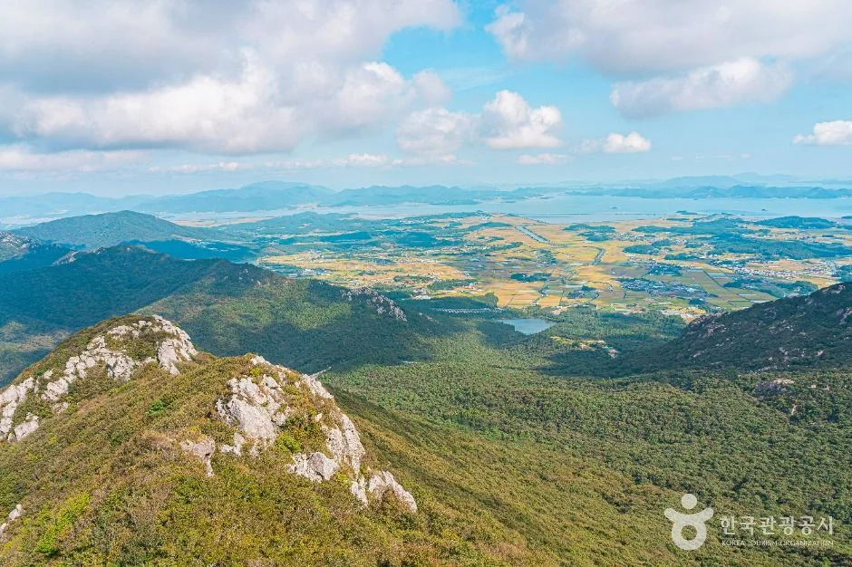
▲ 두륜산 능선에서 내려다본 조망(한국관광공사 제공). 푸른 숲이어서 가을 사진이 아니며 촬영 시기는 확인하지 못했다. 사진=한국관광공사
6. 등산코스 — 거리·소요시간은 공원 누리집 표기 그대로
두륜산도립공원 누리집은 등산코스를 1~4코스 페이지로 나누고, 각 페이지에 대흥사 방면과 오소재약수터 방면 코스를 함께 싣는다. 소요시간은 "일반인"과 "산악인" 두 값이다. 아래 표에는 일반인 값을 적었고, 오소재 방면 코스 번호는 공식 페이지가 '6코스'를 두 번 쓰고 있어 어느 페이지에 실렸는지 같이 적었다.
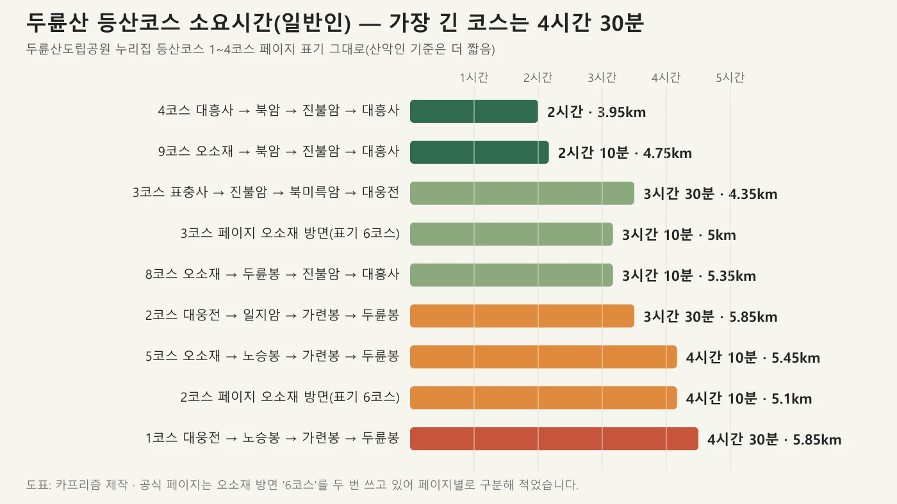
▲ 두륜산도립공원 누리집 등산코스 표기를 바탕으로 만든 소요시간 도표. 사진=카프리즘 제작
| 코스 | 경로 | 총거리 | 일반인 | 산악인 |
|---|---|---|---|---|
| 1코스(대흥사) | 대웅전 → 북미륵암 → 오심재 → 노승봉 → 가련봉 → 만일재 → 두륜봉 → 진불암 → 표충사 | 5.85km | 4시간 30분 | 3시간 30분 |
| 5코스(오소재, 1코스 페이지) | 오소재약수터 → 오심재 → 노승봉 → 가련봉 → 만일재 → 두륜봉 → 진불암 → 대흥사 | 5.45km | 4시간 10분 | 3시간 30분 |
| 2코스(대흥사) | 대웅전 → 일지암 → 북미륵암 → 천년수 → 가련봉 → 만일재 → 두륜봉 → 진불암 → 표충사 | 5.85km | 3시간 30분 | 2시간 50분 |
| '6코스'(오소재, 2코스 페이지) | 오소재약수터 → 오심재 → 노승봉 → 가련봉 → 만일재 → 두륜봉 → 만일재 → 천년수 → 북암 → 오심재 | 5.1km | 4시간 10분 | 3시간 35분 |
| 3코스(대흥사) | 표충사 → 진불암 → 천년수 → 만일재 → 천년수 → 북미륵암 → 대웅전 | 4.35km | 3시간 30분 | 2시간 50분 |
| '6코스'(오소재, 3코스 페이지) | 오소재약수터 → 오심재 → 북암 → 천년수 → 만일재 → 두륜봉 → 만일재 → 천년수 → 북암 → 오심재 | 5.0km | 3시간 10분 | 3시간 |
| 4코스(대흥사) | 대흥사 → 북암 → 천년수 → 진불암 → 대흥사 | 3.95km | 2시간 | 1시간 40분 |
| 8코스(오소재, 4코스 페이지) | 오소재약수터 → 오심재 → 북암 → 천년수 → 만일재 → 두륜봉 → 진불암 → 대흥사 | 5.35km | 3시간 10분 | 2시간 55분 |
| 9코스(오소재, 4코스 페이지) | 오소재약수터 → 오심재 → 북암 → 천년수 → 진불암 → 대흥사 | 4.75km | 2시간 10분 | 1시간 40분 |
한국관광공사 TourAPI는 오소재쉼터 소개에서 오소재쉼터 → 오심재 → 노승봉 → 가련봉(703m, 두륜산 정상) 왕복 5.4km를 "정상을 가장 빨리 오르는 최단 코스"로 소개하고 소요를 "2시간 정도"라고 적는다. 공원 누리집 표의 오소재 방면 코스들은 두륜봉·진불암까지 도는 순환이라 일반인 3~4시간대로 더 길다. 같은 산을 오르는 두 공식 안내가 서로 다른 코스를 말한다는 점에 유의하자.
| 봉우리 | 높이 | 메모 |
|---|---|---|
| 가련봉 | 703m | 두륜산 정상. 케이블카로는 갈 수 없음 |
| 노승봉(능허대) | 685m | 1코스·오소재 코스 경유 |
| 도솔봉 | 672m | |
| 고계봉 | 638m | 케이블카 상부역사 |
| 두륜봉 | 630m | 1·2·5코스 경유 |
| 연화봉 | 613m | |
| 향로봉 | 469m | |
| 혈망봉 | 379m |
북미륵암 — 대흥사에서 걸어 오르는 마애불
1·2·3코스는 모두 북미륵암을 지난다. 두륜산도립공원 누리집은 북미륵암 마애불(옛 표기 보물 제48호)과 삼층석탑(보물 제301호)을 대흥사의 오래된 유물로 소개하고, 한국관광공사 TourAPI는 이를 '국보 대흥사 북미륵암 마애여래좌상'으로 적는다. 국가유산포털(국가유산청)에는 이 마애여래좌상이 국보 제308호(2005년 9월 28일 지정)로, 삼층석탑이 보물 제301호로 올라 있어, 공원 누리집의 '보물 제48호' 표기는 국보 승격 전의 옛 표기로 보인다. 대흥사 템플스테이 2박3일 특별체험형에는 북미륵암 산행이 들어 있다.
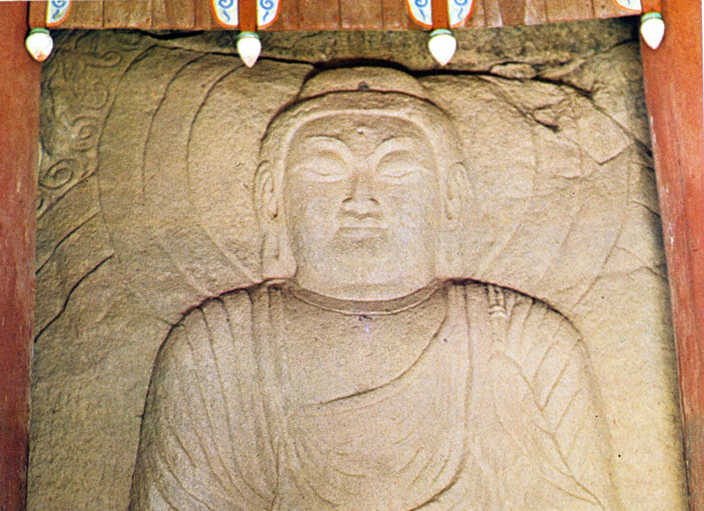
▲ 북미륵암 마애여래좌상. 2009년 9월 촬영으로 표기된 이미지이며 작자 미상, 퍼블릭 도메인으로 표기돼 있다. 사진=위키미디어 커먼스(퍼블릭 도메인 표기)
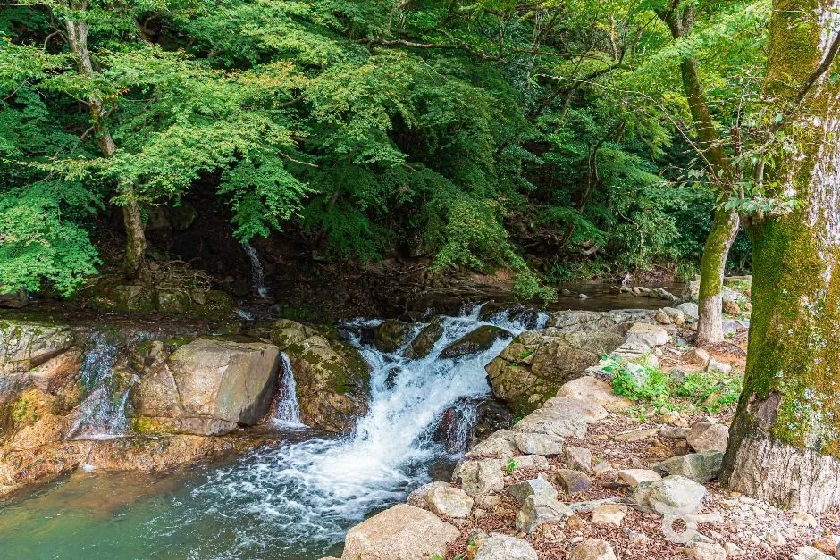
▲ 두륜산의 계곡 물줄기(한국관광공사 제공). 촬영 시기는 확인하지 못했다. 사진=한국관광공사
7. 오소재와 올해 운영 공지 — 확인한 통제는 7월 하루뿐
오소재는 해남군 북일면 흥촌리 쪽 두륜산·주작산 산행 들머리다. TourAPI의 '오소재쉼터' 소개는 주변에 오소재 약수터와 주차장이 함께 있고, 주작산 큰 바위가 까마귀 집을 닮았다 하여 까마귀 오(烏), 집 소(所)를 써 오소재라고 부른다고 적는다. 쉼터는 연중무휴, 주차 가능, 문의 061-530-5917이다.
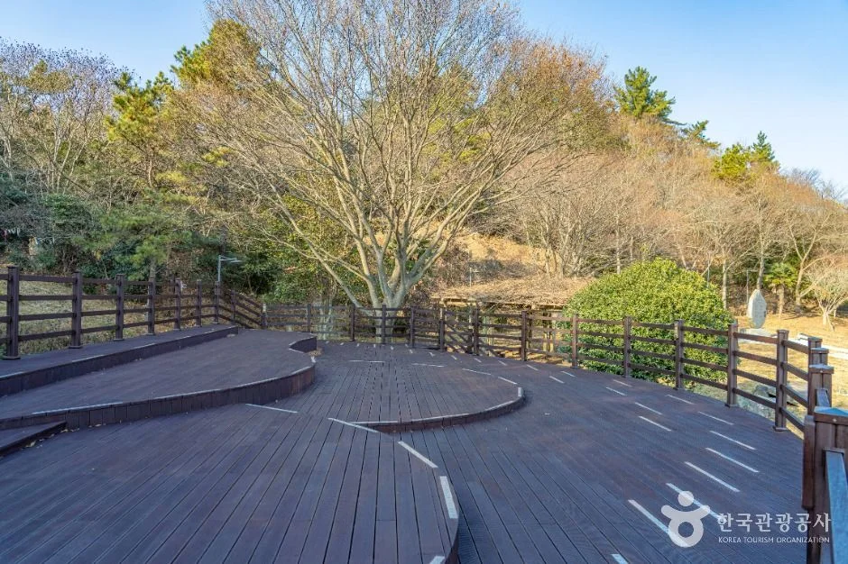
▲ 오소재쉼터 일대 전망 데크(한국관광공사 제공). 촬영 시기는 확인하지 못했다. 사진=한국관광공사
| 작성일 | 제목 | 내용 요지 |
|---|---|---|
| 2025-04-02 | 두륜산 도립공원 임시출입통제구역 지정 | 입산통제 구림리 산8-1번지 외 11필지 11.3ha, 등산로 폐쇄 5.5km(두륜산·주작산). 통제 기간 2025.4.1~5.12. 작년 봄 공지 |
| 2026-07-08 | 집중호우 예보에 따른 탐방로 출입 통제 | 오소재(원문 '오소제') 등산로, 대흥사 매표소 옆 산책로, 표충사 등산로 3곳. 7월 8일 18:00부터 해제 시까지 |
| 2026-07-09 | 탐방로 출입 통제 해제 안내 | 2026년 7월 9일 08:00 이후 통제 해제 |
✅ 올해 가을 통제는 공지가 없지만, 이 점은 확인 못 했다
공원 누리집 공지에는 현재 유효한 통제가 없다. 다만 올해 봄 산불조심기간 통제 공지와 가을철(2026년) 산불조심기간·입산통제 공지는 찾지 못했다(2025년 가을철 산불조심기간은 10월 20일~12월 15일이었다는 농림축산식품부 공고만 확인). 11월 방문 전에 두륜산팀(061-530-5543) 또는 군 산림공원과 산림보호팀(061-530-5427)에 입산 가능 여부를 물어보자. 통제구역에 허가 없이 들어가면 과태료(50만원 이하, 2025년 공지문 표기)가 부과될 수 있다. 공원 공지사항 바로가기
공원 이용규칙 한눈에
| 행위 | 내용 |
|---|---|
| 지정 장소 외 금지 | 상행위·야영·주차·취사 |
| 탐방로 내 반려동물 | 금지, 과태료 1차 10만원·2차 20만원·3차 30만원(장애인 보조견·공원마을지구 제외) |
| 흡연 | 지정 장소 밖 금지, 같은 과태료 기준 |
| 음주 | 두륜산도립공원 전 지역 금지, 같은 과태료 기준 |
| 문의 | 두륜산도립공원 관리사무소(해남군청) 061-530-5957~5960 |
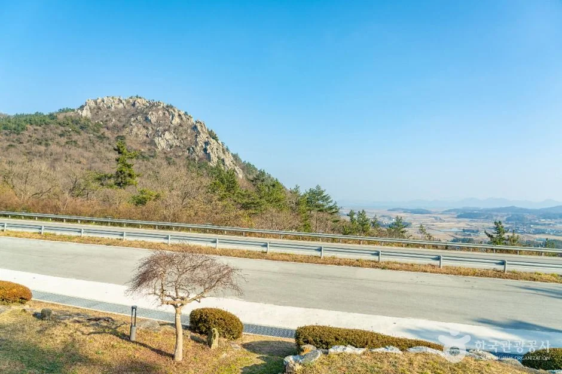
▲ 오소재쉼터 일대에서 본 바위 봉우리와 들판(한국관광공사 제공). 촬영 시기는 확인하지 못했다. 사진=한국관광공사
8. 하루 동선 예시 — 케이블카 반나절 vs 정상 산행
아래 일정은 확인한 운영 시간과 소요시간을 이은 카프리즘의 예시다. 케이블카 왕복 1시간, 코스 소요시간, 일몰 계산값이 근거이며, 정확한 대기 시간은 날짜마다 다르다.
| 시각(예시) | 할 일 | 근거 |
|---|---|---|
| 09:00 | 케이블카 하부역 도착, 무료 주차, 당일 시간표 받기 | 운영사: 당일 현장 예매, 개장 09:00 |
| 09:30~10:30 | 케이블카 왕복(상부역사 체류 포함 약 1시간) | 운영사 FAQ: 왕복 1시간 정도 |
| 11:00 | 대흥사 이동·주차(승용 3,000원) | 공원 누리집(2021년 표기) |
| 11:30~13:30 | 대흥사 경내 산책 | 입장료 무료 |
| 점심 | 두륜산 웰빙음식촌(해남군 소개 문구) | 해남군 누리집. 영업 시간은 확인하지 못함 |
| 오후 | 두륜미로파크(09:00~18:00, 월요일 휴관, 입장료 무료 표기) | 공원 누리집 |
| 날짜 | 일몰(계산) | 일몰 − 4시간 30분 | 1시간 여유를 둔 출발 마감 |
|---|---|---|---|
| 10월 31일(토) | 17:41 | 13:11 | 12:10 전후 |
| 11월 11일(수) | 17:32 | 13:02 | 12:00 전후 |
| 11월 15일(일) | 17:29 | 12:59 | 12:00 전후 |
공원은 일몰 2시간 전부터 입산 주의를 안내하는데, 4시간 30분이 걸리는 코스는 이 기준보다 훨씬 이르게 출발해야 해 지기 전에 내려올 수 있다. 일반인 소요시간은 공식 값이고, 가을 낙엽·젖은 돌길에서는 더 걸릴 수 있다(카프리즘 판단). 시간이 부족하면 4코스(2시간)나 오소재 9코스(2시간 10분)가 현실적이다.
9. 인근 해남 명소와 같은 권역 기사
해남군 관광 안내의 '대흥사권 코스'(TourAPI 소개)는 해남읍 → 고산윤선도 유적지 → 고정희 생가 → 김남주 생가 → 두륜산 케이블카 → 대흥사 → 해남읍 순서다. 땅끝 쪽과 묶는 일정은 카프리즘의 달마산 도솔암·미황사·달마고도 기사에서 미황사 달마고도와 땅끝관광지, 대흥사까지 하루 동선으로 정리했다.
| 장소 | 확인된 내용 | 메모 |
|---|---|---|
| 미황사 | 상시 개방, 연중무휴, 입장료 무료, 주차 가능, 061-533-3521. 1일 템플 체험은 시작일 이틀 전까지 예약 | 달마산 서쪽. 기사: 달마산 도솔암·미황사 기사 |
| 땅끝마을(갈두마을) | 상시 개방, 연중무휴, 입장료 무료, 주차 가능. 소개문에 '10월 20일~25일 사이 맴섬 가운데로 뜨는 일출'이 언급됨 | 관광안내소 061-532-3883. 땅끝천년숲옛길 땅끝길 약 17km 시작점 |
| 두륜미로파크 | 09:00~18:00, 월요일 휴관, 입장료 무료 표기, 대흥사길 88-11 | 공원 누리집 '현재' 표기 |
| 고산윤선도 유적지(녹우당) | 해남읍 녹우당길 130 | 061-530-5548. 운영 시간·요금은 확인하지 못함 |
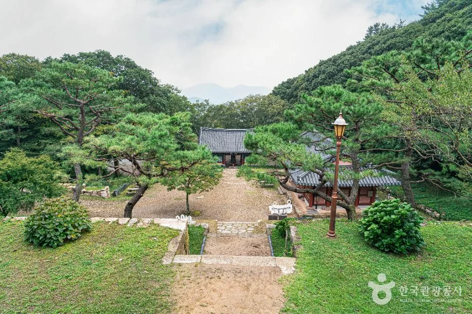
▲ 해남 미황사 경내(한국관광공사 제공). 촬영 시기는 확인하지 못했다. 사진=한국관광공사
같은 전남 서남부 코스로는 강진 가우도·다산초당·백련사 차량 일정, 월출산 구름다리 가을 가이드(산림청 예측 절정 11월 9일), 완도 청산도 슬로시티가 있다. 이 기사들과 두륜산의 이동 거리·시간은 공식 자료로 확인하지 못해 적지 않았다.
10. 가는 길 — 승용차와 버스 안내가 어긋나는 부분
템플스테이 누리집 '오시는 길'(작성일 미표기)은 승용차로 광주에서 약 1시간 20분, 부산에서 3시간 30분, 서울에서 4시간 30분을 안내한다. 광주버스터미널에서는 해남행 직통버스가 04:40~22:15 30~40분 간격으로 있고 약 80분 걸린다고 적는다. 해남읍에서 대흥사까지는 군내버스가 06:30~19:40 30분 간격, 25분 소요이며 종점에서 절까지 도보 30분이라고 안내한다. 공원 누리집 '오시는 길'은 광주발 해남행 버스를 2시간 소요, 직행 04:30~22:00(15~20분 간격)과 직통 06:00~20:30(30분 간격)으로 적어, 같은 광주 노선인데도 템플스테이 누리집의 값(80분, 30~40분 간격)과 다르다. 공원 누리집에는 해남에서 대흥사까지 가는 군내버스 시간표가 없다. 두 안내가 다르므로 버스 이용 땐 해남 터미널에서 막차를 확인하는 것이 좋다.
| 장소 | 주소 |
|---|---|
| 두륜산케이블카 하부역사 | 전남 해남군 삼산면 대흥사길 88-45 |
| 대흥사·두륜산도립공원 | 전남 해남군 삼산면 대흥사길 400 |
| 두륜미로파크 | 전남 해남군 삼산면 대흥사길 88-11 |
| 오소재쉼터 | 전남 해남군 북일면 흥촌리 산117-7 |
| 도립공원 관리사무소 | 전남 해남군 삼산면 대흥사길 154 |
TourAPI의 2026년 자료에는 주소 앞에 '전남광주통합특별시'가 붙어 있다. 내비게이션에는 '해남군 삼산면 대흥사길 88-45'처럼 군 이하 주소로 넣어도 된다.
11. 출발 전 체크리스트
✅ 출발 전 체크리스트
· 케이블카: 왕복 대인 15,000원·소인 12,000원, 하절기 09:00~18:00·동절기 09:00~17:00, 전화 예약 불가, 당일 현장 시간 예매(운영사)
· 내리는 곳은 고계봉이며 가련봉은 대흥사에서 걸어 올라야 함. 임산부·반려동물·술·음식물·등산 배낭은 탑승 불가
· 대흥사 입장료 무료, 주차료 승용 3,000원(2021년 표기, 현장 확인), 케이블카 주차장 무료
· 단풍 절정 예측 11월 11일(수, 산림청 50% 기준), 두륜산 올해 현황 공지는 확인 못 함
· 올해 통제는 7월 8일 집중호우 통제(7월 9일 해제)만 확인. 가을철 산불조심기간 통제는 두륜산팀에 전화 확인
· 4시간 30분 코스는 11월 중순 정오 전후 출발 마감(일몰 17:29~17:32, 카프리즘 계산)
- 두륜산도립공원: 061-530-5957, 시설 061-530-5958, 두륜산팀 061-530-5543
- 두륜산케이블카: 061-534-8992
- 대흥사 종무소 061-534-5502~3, 템플스테이 061-535-5775
- 해남군 관광안내: 061-532-1330
12. 정리
두륜산케이블카는 왕복 대인 15,000원·소인 12,000원이고, 전화 예약 없이 당일 현장에서 시간표를 받는다. 하절기 09:00~18:00, 동절기 09:00~17:00이며 동절기 전환일과 정기 점검일은 확인하지 못했다. 내리는 곳은 고계봉(638m)이어서 정상 가련봉(703m)은 대흥사에서 걸어 올라야 한다.
산림청 예측 두륜산 단풍 절정(50%)은 11월 11일이며, 올해 확인된 공식 통제는 7월 8일 집중호우 통제(7월 9일 해제) 하나다. 대흥사 입장료는 무료이고 주차료 3,000원은 2021년 표기라 현장 확인이 필요하다.